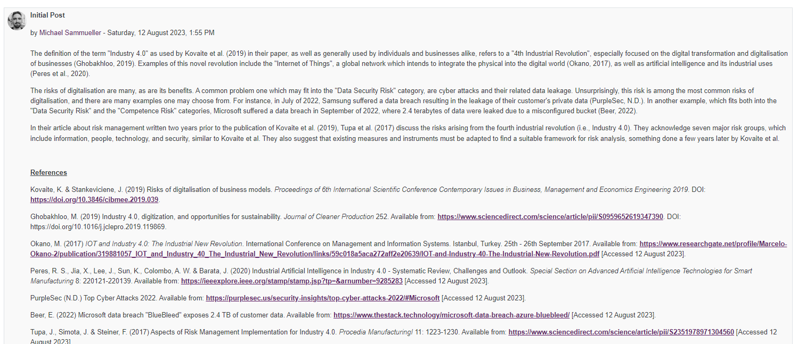
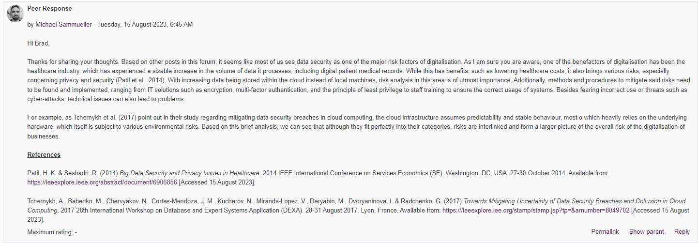
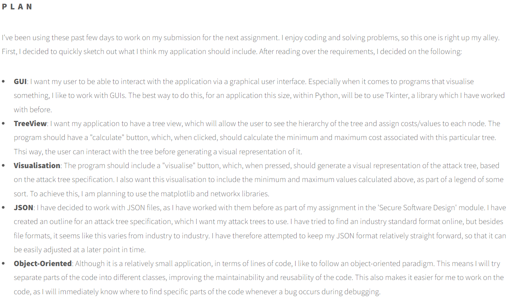

Unit 6: Final Reflection
Word Count: 876
Introduction
Although much shorter than its predecessors, Information Security Management was just as detailed and informative. Being the first 10-credit module I have undertaken as part of my studies with the University of Essex, I was unsure what to expect. However, it became clear quite quickly that this module would be equally as challenging as a 20-credit module.
My prior exposure to risk management and threat modelling has been somewhat limited. The only experience with this topic, as part of my job in the air traffic simulation field, is gap analysis, where we analyze how simulated and operational systems differ. Doing so allows us to remove those differences so we can provide a seamless experience to air traffic controllers during training sessions. Small differences in the user interface or system functionality can cause significant problems later on once a controller works in operations, ultimately posing a risk to the entire air navigation service.
Study Approach
Over the past year, I have developed a habit of reading through the assignments of a module once I gain access to it. This allows me to approach my studies in a way where my focus lies on the assignments ahead, giving me ample time to soak up vital knowledge throughout each unit, long before having to work on the assignments. As it was my first time creating a risk assessment, I really appreciated the first two units and their encompassing introductions to various types of risk assessment frameworks, such as STRIDE, DREAD, OCTAVE, and PASTA. After looking at the assignment’s case study and much contemplation, I decided to use STRIDE and DREAD, as these frameworks are mature (Shevchenko et al., 2018) and tailored not only to IT systems but also to the analysis of entire businesses (Kim, 2022). Following this path enabled me to perform a risk analysis which studies the business from multiple angles.
After producing a very detailed draft of my risk analysis, I created attack trees, network diagrams, and data flow diagrams to visualize the current business, as well as the digitalisation proposal. Later on, I struggled to cut down on detail in order to meet the 600-word limit, since that meant removing details I deemed vital to my report. For future assignments, I plan to rely even more on tables, as I have now learned that they are not considered part of the word count. I hope to take this knowledge into future modules to improve the overall quality of my reports.
Discussion Forums
I appreciated the inclusion of discussion forums within this unit, as it allowed my peers and I to share thoughts and ideas, as well as to discuss opinions on various topics related to risk analysis. These forums help in deepening one's understanding of the topic, which is something that I have learned to appreciate over the past few modules.
 E-Portfolio
Whether to record ideas and study notes or to plan my assignments, I found it very beneficial to include my thoughts in my e-portfolio. Although not graded in this module, I kept up the habit of writing a reflection for each unit and recording artefacts. Not only does this aid in reflecting on the material learned but also quickly refreshes one’s knowledge on a topic if required.
Final Coding Project
For the final project, I decided to create an application based on a graphical user interface. I had worked with the Tkinter library before, so it was easy to get started. GUI applications are much more user-friendly than a CLI, especially for less technically literate users.
To define attack trees, I chose the “.JSON” format, because it is very logically structured, and I had used the “JSON” library recently for another university project. To visualize the attack trees, I selected “matplotlib” and “networkx”, as well as the “pydot” interface for “graphviz”.
Ideally, I would have liked to work with the “pygraphviz” interface, as it includes additional features such as saving the graph as a “.png”. However, after coding this project on MacOS, I discovered that installing “pygraphviz” on Windows is almost impossible, so I had to restructure the code to work with “pydot” instead. If I had more time, I would have looked into other solutions to include these features. Luckily for me, all of these libraries and interfaces are well documented, allowing me to read through various tutorials to aid in building this application.
Lastly, I would have liked to include the user-assigned cost of each leaf node within the graphical representation of the tree, but due to limited time, I was unable to do so. This is a feature that could definitely be added in the future.
Conclusion
Overall, I am satisfied with my work throughout this module, and I have learned a lot which I can take with me into future modules. Based on what I know now, I plan to improve my reports and make tables and diagrams work for me more efficiently, to include more details. I appreciate the knowledge I have gained, and understanding the importance of recognising risks and threats early, finding mitigations, learning to accept certain risks, and being prepared for their consequences is vital, and something that will help me both academically and professionally.
References
Shevchenko, N., Chick, T. A., O’Riordan, P., Scanlon, T. P., & Woody, C. (2018) Threat Modeling: A Summary Of Available Methods. Carnegie Mellon University, Software Engineering Institute. Pittsburgh, United States. Available from: https://resources.sei.cmu.edu/library/asset-view.cfm?assetid=524448 [Accessed 12 September 2023].
Kim, K. H., Kim, K. & Kim, H. K. (2022) STRIDE-based threat modelling and DREAD evaluation for the distributed control system in the oil refinery. Special Issue: Special Issue on 6G and Satellite Communications 44(6): 991-1003. DOI: https://doi.org/10.4218/etrij.2021-0181